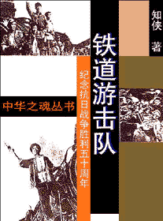

|  |
第一章 王强夜谈敌情
第二章 老洪飞车搞机枪
第三章 合伙开炭厂
第四章 来了管帐先生
第五章 政委和他的部下
第六章 小坡被捕
第七章 血染洋行
第八章 山里来了紧急命令
第九章 票车上的战斗
第十章 初会微山湖
第十一章 夜袭临城
第十二章 敌伪顽夹击
第十三章 进山整训
第十四章 出山
第十五章 渔船上 |
第十六章 小坡和王虎
第十七章 地主
第十八章 在湖边站住脚了
第十九章 打冈村
第二十章 六孔桥上
第二十一章 松尾进苗庄
第二十二章 站长与布车
第二十三章 拆炮楼
第二十四章 微山岛沦陷
第二十五章 她的遭遇
第二十六章 三路出击
第二十七章 掩护过路
第二十八章 胜利
后记
《铁道游击队》创作经过 |